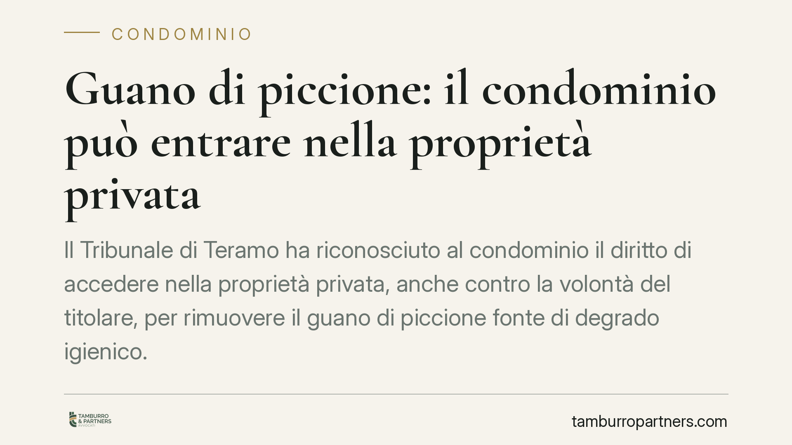

Guano di piccione: il condominio può entrare nella proprietà privata
Il Tribunale di Teramo ha riconosciuto al condominio il diritto di accedere nella proprietà privata, anche contro la volontà del titolare, per rimuovere il guano di piccione fonte di degrado igienico. Spese interamente a carico del proprietario negligente. La decisione bilancia tutela del domicilio e salute collettiva, applicando l'art. 843 c.c. e il ricorso d'urgenza.

Il caso deciso dal Tribunale di Teramo
Un condominio si trovava a convivere con accumuli consistenti di escrementi di piccione provenienti da una singola unità immobiliare. Il proprietario, pur sollecitato, si rifiutava sia di provvedere alla pulizia sia di consentire l'accesso ai tecnici incaricati dall'amministratore.
Con l'ordinanza n. 2838/2026 il Tribunale ha autorizzato l'ingresso coattivo nell'immobile per eseguire la rimozione, ponendo l'intero costo dell'intervento a carico del proprietario inadempiente. Il giudice ha ritenuto che il degrado igienico-sanitario integrasse un pericolo attuale e concreto per la collettività condominiale.
Inquadramento normativo
Il fondamento è l'art. 843 del codice civile, che impone al proprietario di consentire l'accesso al proprio fondo quando ciò sia necessario per eseguire opere relative a un fondo vicino o comune. È la cosiddetta tolleranza dell'accesso: non un esproprio, ma un obbligo temporaneo di far entrare chi deve intervenire, salvo indennizzo per l'eventuale danno.
Lo strumento processuale utilizzato è il ricorso d'urgenza ex art. 700 c.p.c., che consente al giudice di adottare provvedimenti immediati quando esiste il rischio che, nel tempo necessario a un giudizio ordinario, il diritto subisca un pregiudizio irreparabile. Qui il pregiudizio è duplice: igienico e sanitario.
Il bilanciamento operato dal Tribunale muove da due principi costituzionali apparentemente in tensione. L'art. 14 Cost. tutela l'inviolabilità del domicilio; l'art. 32 Cost. tutela la salute come interesse della collettività. Il guano di piccione non è una semplice questione estetica: è veicolo di agenti patogeni e parassiti. Di fronte a un rischio sanitario documentato, la tutela del domicilio recede, nei limiti dello stretto necessario all'intervento.
Cosa cambia in concreto
La decisione offre al condominio una via d'uscita dalle situazioni di stallo. Finora, il rifiuto del singolo proprietario rendeva spesso impossibile intervenire su una fonte di degrado localizzata in proprietà privata, con danno a cascata su tutti.
Tre conseguenze pratiche meritano attenzione.
La prima riguarda le spese: non gravano sul condominio né vengono ripartite tra i condomini. Restano in capo a chi ha causato o tollerato il degrado. È un principio coerente con la responsabilità del proprietario per la custodia del proprio bene.
La seconda riguarda i presupposti: l'accesso coattivo non è automatico. Serve dimostrare un pericolo igienico-sanitario effettivo, non una mera fastidiosità. Il condominio deve documentare lo stato dei luoghi e, preferibilmente, acquisire un riscontro tecnico o dell'autorità sanitaria.
La terza riguarda il metodo: l'intervento passa dal giudice. L'amministratore non può decidere autonomamente di forzare una porta. Serve un provvedimento che autorizzi e delimiti l'accesso.
Cosa fare in concreto
- Documentate lo stato dei luoghi. Raccogliete fotografie datate, eventuali segnalazioni di altri condomini e una relazione tecnica che attesti il rischio igienico-sanitario. La prova del pericolo è il cuore della domanda d'urgenza.
- Mettete in mora il proprietario per iscritto. Inviate una diffida formale, a mezzo PEC o raccomandata, assegnando un termine per la pulizia e per consentire l'accesso. Il rifiuto o il silenzio rafforzano la posizione processuale del condominio.
- Coinvolgete ASL e Comune. Una segnalazione all'autorità sanitaria o al Sindaco, titolare di poteri in materia di igiene pubblica, può produrre un ordine autonomo e costituisce elemento probatorio del pericolo.
- Verificate la legittimazione dell'amministratore. Prima del ricorso d'urgenza, accertate che l'amministratore sia autorizzato ad agire o acquisite una delibera assembleare, per evitare eccezioni sul piano della legittimazione.
- Valutate il ricorso ex art. 700 c.p.c. con un legale. La domanda deve indicare con precisione l'intervento richiesto, i soggetti autorizzati all'accesso e la richiesta di addebito delle spese al proprietario.
La pronuncia di Teramo è un'ordinanza cautelare e, come tale, legata alle circostanze del caso concreto. Non introduce una regola automatica, ma conferma un orientamento: quando il degrado di una proprietà privata minaccia la salute della collettività condominiale, l'inerzia del singolo non può bloccare l'intervento.
---
*Contributo informativo a cura di Tamburro & Partners - Avv. Giuseppe Tamburro. Non costituisce parere legale.*
Ogni condominio ha una storia a sé.
Se gestisci un'amministrazione e vuoi un confronto su una specifica questione condominiale, scrivi allo studio. Ti rispondiamo entro un giorno lavorativo.